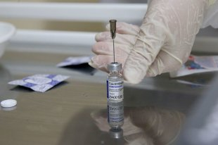

Почему важно носить маску даже тем, кто вакцинировался от COVID-19
Ношение масок по-прежнему остается обязательным и распространяется даже на тех, кто сделал прививку.Об этом уже не раз заявляли эксперты, на днях подтвердил это и министр здравоохранения Михаил Мурашко.
'Имеющий иммунитет человек после контакта с заболевшим кратковременно может стать носителем инфекции и инфицировать окружающих.Поэтому ношение масок сегодня является и после вакцинации обязательным', - объяснил глава Минздрава.

По его словам, иммунитет формируется только через три недели после введения второго компонента вакцины или через 42 дня после первого укола.
К тому же маски в принципе остаются наиболее эффективным и доступным средством, чтобы обезопасить себя и окружающих, а также бороться с распространением инфекции в целом.Эффективность масок неоднократно доказана в процессе исследований - в частности, эксперты Токийского университета доказали, что хлопковые и медицинские маски защищают от переносимых по воздуху частиц коронавируса.Риск заражения для человека в маске снижается минимум на 40%, показало исследование.
Ношение масок в общественных местах остается обязательным и в Москве, несмотря на смягчение ряда ограничительных мер с 22 января.Напротив, заполнение залов театров и кинотеатров наполовину, открытие музеев, библиотек и других учреждений требуют особо строгого отношения к мерам безопасности, включая ношение масок.
'Залог успеха - активное участие в вакцинации и соблюдение масочного режима на транспорте и в общественных местах.Рассчитываю на вашу поддержку в реализации этих важнейших мер борьбы с коронавирусом', - написал сегодня мэр Сергей Собянин, объявляя о смягчении ограничений.
Если масочный режим помогает сдерживать распространение коронавируса, то победить его может только вакцинация.Она, напомним, набирает обороты по всей стране, в том числе в Москве.Привились уже 220 тысяч горожан.Пункты вакцинации работают не только в поликлиниках, но и в общественных местах - от музыкального театра 'Геликон-опера' до ГУМа на Красной площади.
Posted On: 2021-01-20T21:00:00
Posted By: Александр Мелешенко
Content Date: 2021-01-20
Download Date: 2021-04-21
Document ID: L0C04AO4C